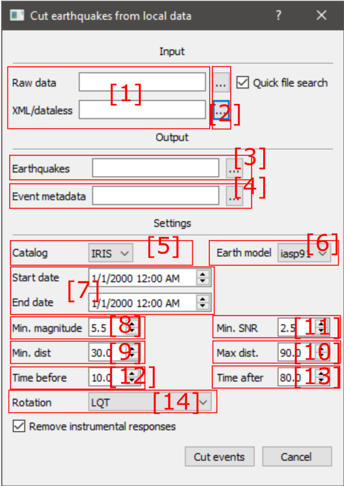
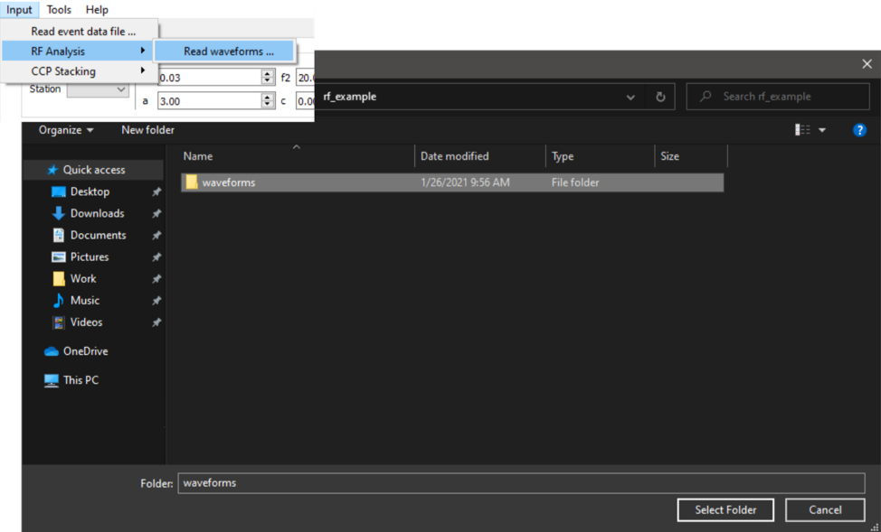
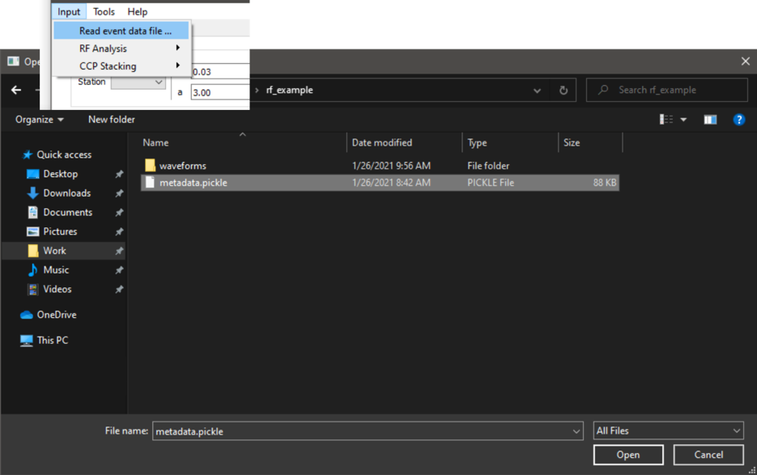
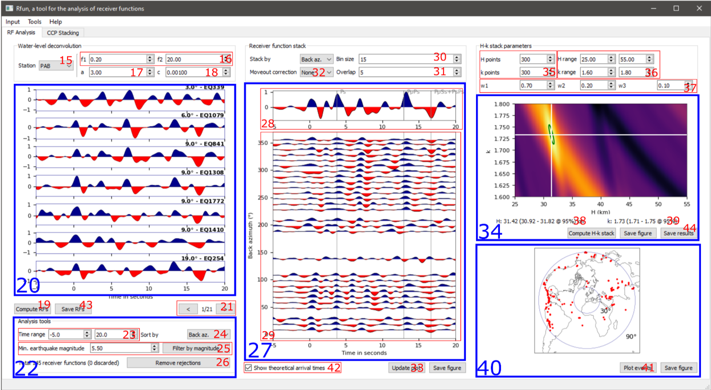
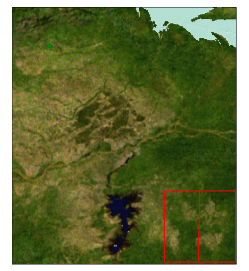
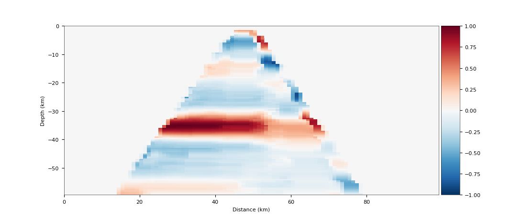

Receiver Functions
Get & Cut Eartquakes
The receiver functions module uses a water-level deconvolution method to compute P to S receiver functions from earthquake recordings in mseed format. The program can be used to perform the H-k stacking (Zhu & Kanamori, 2000) of the receiver functions for the determination of the crustal thickness and VP/VS ratio, as well as the back-tracing and CCP (‘common-conversion point’) stacking. The first step in the receiver function analysis consists in cutting a time window containing the P-wave arrivals for each earthquake and station. The ‘Cut earthquakes’ tool requires that the data we want to work with is available locally and can be accessed from the Menu Bar under ‘Tools > Cut earthquakes …’ (Fig. 1).

Fig. 1. Screenshot of the 'Cut earthquakes' tool. The numbers in the image are referred to in the text below.
The ‘Raw data’ and ‘XML/dataless’ fields [1] must point to the directory containing our mseed data and the StationXML/dataless file for the instruments used to record the data (which must contain the location of the stations at least, and the instrumental responses if we wish to remove them). The ‘Quick file search’ checkbox can be used to quickly index the input files if they follow the naming convention “YEAR.JULDAY.LOC.STATION.CHANNEL.mseed”.
If they do not, simply uncheck this option and the code will read the .mseed file headers instead. The buttons labeled with ‘…’ [2] can be used to select the correct paths through the file explorer. The output of the ‘Cut earthquakes’ tool consists in a directory containing the windowed earthquakes for each station [3], and a metadata file [4] containing information about each event such as the origin time, location, azimuth, ray parameter, etc. The output paths for these files must also be set by the user. Under the ‘Settings’ section we can tune a few parameters regarding event selection, quality control and time windowing of the records. The determination of the P-wave arrival time to each station is performed automatically using the TauPy package and the information contained in a event catalog downloaded from a Web Service [5].
The ‘Earth model’ used in the TauPy computations can be selected using a drop-down menu [6]. The starting and ending dates for the event catalog can be set using [7]. The minimum magnitude of the selected events, the minimum and maximum epicentral distances (in degrees), the minimum acceptable signal-to-noise ratio for each event, and the start and end of the time window to cut from the local record relative to the P-wave arrival time can be set using [8], [9], [10], [11], [12], [13]. The coordinate system in which we want to work, ‘LQT’ for Q-receiver functions or ‘ZRT’ for R-receiver functions, can be set using a drop-down menu [14].

Fig. 2. Selection of the metadata file provided in the ISP example files.
Estimate RFs
Once the P-wave records are cut, the metadata file and a directory with the structure output/station/mseed files should have been created (the output path was set in the ‘Cut earthquakes’ tool, fields [3] and [4]). To compute and start working with the receiver functions, load the metadata file using the Main menu bar option ‘Input > Read event data file …’ (Fig. 2). Triggering this option will open the file explorer. Once the metadata file has been successfully loaded, read the P-wave records under ‘Input > RF Analysis > Read waveforms …’. A new instance of the file explorer will be opened (Fig. 3). It is important that the root directory containing the different station folders (field [3] chosen in the ‘Cut earthquakes’ tool) is selected, as the directory structure will allow the code to sort the data correctly. In this example, we will use the P-wave recordings and metadata file provided with ISP. These were created from 4 years of continuous recordings of the IU.PAB station (2002 to 2006) downloaded from the IRIS DMC.

After correctly selecting the example files, the station ‘PAB’ will appear in the Water-level deconvolution panel [15] (Fig. 4). The Water-level deconvolution settings include a bandpass filter that is applied to the waveforms prior to deconvolution, with corner frequencies f1 and f2 [16], the width of the low-pass Gaussian filter used in the deconvolution [17], and the water-level itself [18]. These parameters should be tuned to obtain the best results for each individual station, but the default values are usually a good starting point. Once the settings are set, press the ‘Compute RFs’ button [19] and the receiver functions will appear on the panel [20]. A maximum of 7 receiver functions are displayed at once. Scroll through the different pages using the ‘<’ and ‘>’ buttons on the bottom right side of the panel [21]. Poor-quality receiver functions can be discarded by left-clicking on them, and reaccepted by left-clicking again (Fig. 5). Right clicking on the frame of a receiver function will display the waveform from which it was calculated. The ‘Analysis tools’ panel [22] can be used to change the time range displayed [23], sort the display order of the receiver functions [24] by back-azimuth or distance, discard all events lower than a certain magnitude [25] or remove all rejections, manual or automatic, and accept all receiver functions [26].
The ‘Receiver function stack’ panel [27] is intended to give the user an overview of all the available receiver functions in use, in order to facilitate their inspection and the detection of poor quality receiver functions that may be harming the results. The stack of all receiver functions is shown in the top part of this panel [28] and stacks at regular intervals of backazimuth or epicentral distance are shown on the bottom panel [29]. The size of these intervals and any desired overlap between them can be adjusted using the fields [30] and [31]. A ‘Ps’ phase moveout correction can be applied by selecting it in the [32] drop-down menu. To display the stack, simply press the ‘Update plot’ button [33].
The ‘H-k stack’ panel [34] displays the results of the H-k stacking, based on Zhu & Kanamori (2000). The code uses the semblance-weighted stacking method proposed by Eaton et al. (2006). The density of crustal thickness – Vp/Vs ratio (k) points for the H-k matrix can be adjusted using the fields [35], although the default value should be more than enough. The crustal thickness – Vp/Vs value ranges can be set using the fields [36], and the weights for the Ps, PpPs and PpSs+PsPs phases can be set using the fields [37]. Two widely used sets of weights are 0.70, 0.20, 0.10 and 0.34, 0.33, 0.44 for Ps, PpPs and PpSs+PsPs, respectively. Once satisfied with the parameters, press the ‘Compute H-k stack’ button. The H-k matrix will be shown, and the location of the maximum will be marked with two white lines. The uncertainty is displayed as a green ellipse and is computed following Eaton et al. (2006). The values and uncertainties for both parameters are shown in two labels below the H-k plot [38], [39]. The results for the PAB station example are H = 31.42, k = 1.73. The EARS result for this station are H = 32 km, k = 1.76 (http://ears.iris.washington.edu/Data/Summary/gauss_2.5/WM/UCM/station.html, last seen 26/01/2021).
The event panel is located in the bottom right side of the main window [40] and displays the location of all the events used in the H-k computations. To generate this figure, simply press the ‘Plot events’ button [41]. For reference, two circles indicating 30 and 90 degrees of epicentral distance from the station are also displayed.
After the H-k maximum is determined, the theoretical arrival times of the Ps, PpPs and PpSs+PsPs phases can be displayed on the ‘Receiver function stack’ panel for reference. For this, check the box labeled as ‘Show theoretical arrival times’ [42] and press the button ‘Update plot’ [33]. Two types of results can be saved: the receiver functions (which will be used in the second chapter of this tutorial) and the H-k maximum coordinates, pressing buttons ‘Save RFs’ [43] and ‘Save results’ [44], respectively. Both options open a file dialog. The ‘Save RFs’ [43] function requires the user to select an output folder where the receiver functions for the current station will be dumped as a Python pickle file. The ‘Save results’ [44] will output the H-k results in .csv format, creating a new file if it doesn’t exist, or appending to an existing file if selected. Figures of the Receiver function stack, the H-k stack, and the event location plot can be saved using the corresponding ‘Save figure’ button, which will display the Save figure dialog. The ‘Save figure’ dialog creates a .png or .pdf image of the data being displayed in the main user interface. Height, width, and quality of the figure (DPI) can be chosen, as well as the size of the margins and the figure labels.

- Fig. 4. Screenshot of the main window. The numbers in the image are referred to in the text above*
Back-tracing and CCP stacking of RFs
After the receiver functions have been computed and undergone a visual quality control, they can be saved using the ‘Save RFs’ feature ([43], Fig. 4). The resulting files can be loaded back into the program for the back-tracing and CCP stacking of the receiver functions. The first step is to load the event metadata file produced in the previous chapter. If it is already loaded for the H-k analysis, it will not be necessary to load it again. The second step is to read the saved receiver functions. This can be done under ‘Input > CCP Stacking > Read RFs …’. Triggering this option will display an open file dialog, in which the directory containing the receiver function files must be selected. Once loaded, switch to the “CCP Stacking” tab in the main window. A map of the stations with available receiver functions will be in display. The stacking is performed over a user-defined grid. This can be done either manually (pressing the ‘Manual selection’ button in the ‘Grid


Fig. 5. Cross section map and CCP stacking